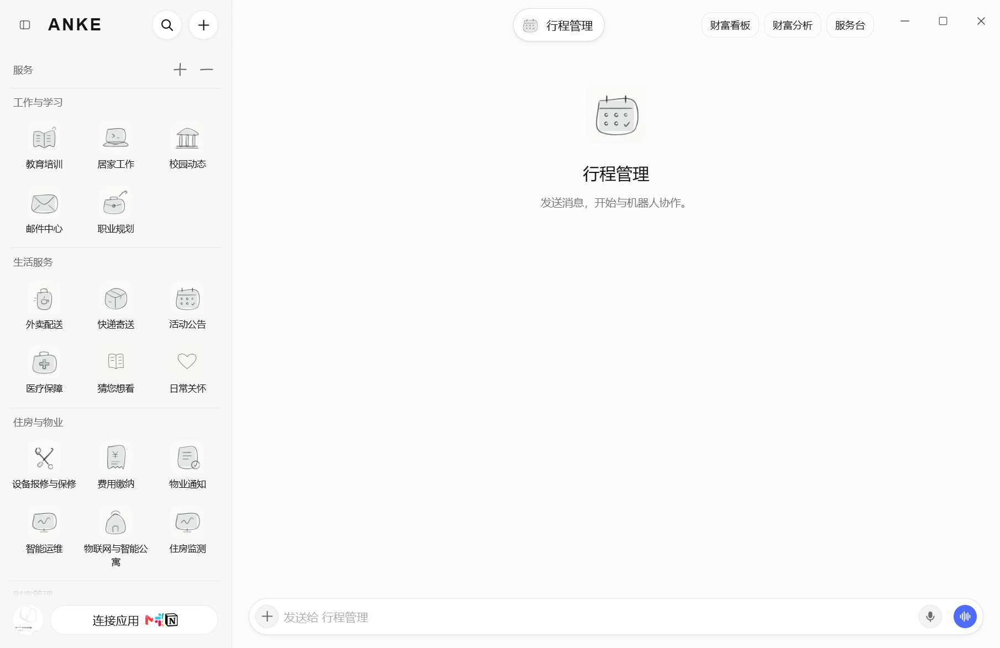
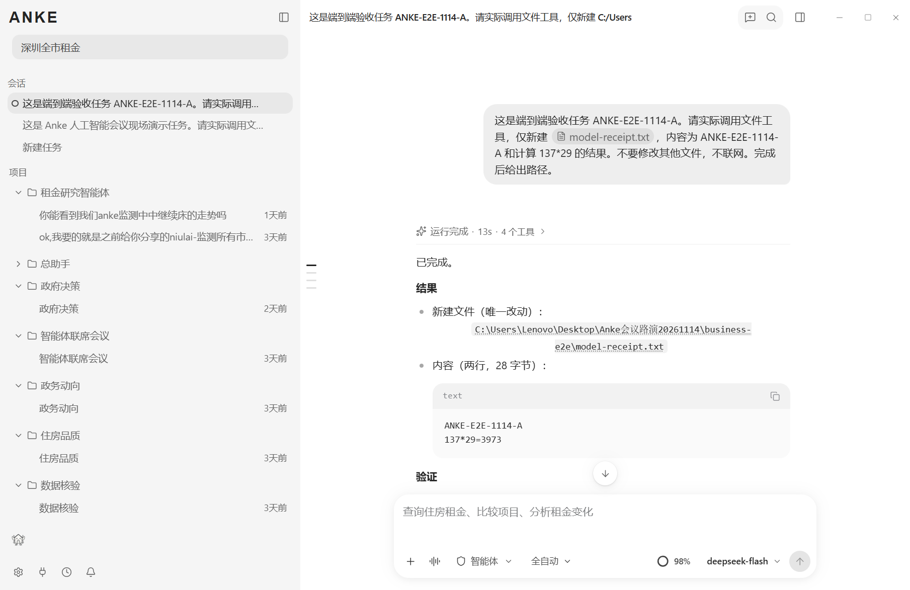

理清申请条件与材料
整理家庭需求、申请资格、材料清单与截止时间。
探索相关能力 ↗HOUSING. WORK. LIFE.
从申报、选房到入住，
从一项工作，到生活中的每件小事。
让信息、任务与服务，在同一个地方衔接。

TWO WAYS. ONE ANKE.
Agent 负责执行与产出。
Bot 按角色和场景组织协作。
AGENT / 执行
选择模型，提供资料，发起任务。展开工具记录，查看文件与可视化结果，中断后继续推进。

EXPLORE ANKE
住房、工作、社区与财富。
按场景探索，按任务推进。
A PLACE TO CALL HOME
沿着居住的全过程，
找到当下要处理的事。
整理家庭需求、申请资格、材料清单与截止时间。
探索相关能力 ↗SEE IT IN ACTION
从工作区、模型到任务结果，
再进入 Bot 与住房监测。
YOUR NEXT STEP
WHAT'S NEW
预览面板跟随模式关闭，整理服务分类和任务结果展示。
中文解说串起任务执行、Bot 与住房监测。
汇集租金记录、项目比较、政策资讯与生活服务入口。
Agent 使用模型和工具执行任务，产出文件与分析结果。Bot 按成员、群聊和生活场景组织入口与工作记录。
通过住房工作台查看已导入的租金记录、项目、来源和日期，按行政区与租赁方式筛选，再展开明细。
在应用内配置对应账户或连接器后使用。邮件、支付配送、物联网、云同步的完整接通仍在推进，入口与实际连接状态分别展示。
正式安装包与发布说明由 Anke 仓库管理。进入发布页选择可用版本；自动下载安装与重启更新的完整链路仍需验收。
使用场景
MAKE ROOM FOR LIFE.